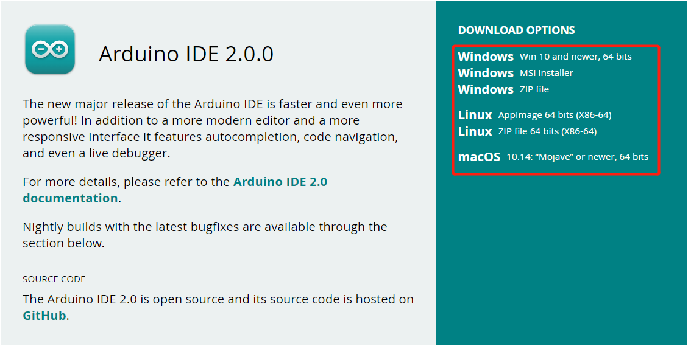
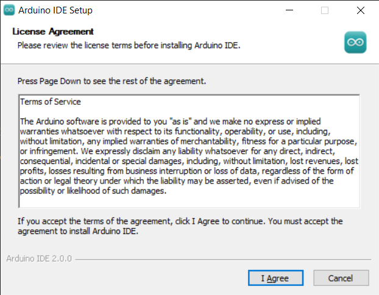
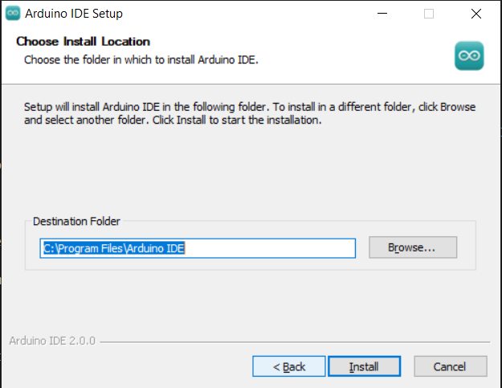
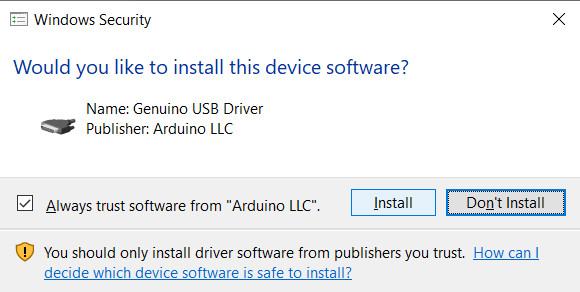

Bemerkung
Hallo und willkommen in der SunFounder Raspberry Pi & Arduino & ESP32 Enthusiasten-Gemeinschaft auf Facebook! Tauchen Sie tiefer ein in die Welt von Raspberry Pi, Arduino und ESP32 mit anderen Enthusiasten.
Warum beitreten?
Expertenunterstützung: Lösen Sie Nachverkaufsprobleme und technische Herausforderungen mit Hilfe unserer Gemeinschaft und unseres Teams.
Lernen & Teilen: Tauschen Sie Tipps und Anleitungen aus, um Ihre Fähigkeiten zu verbessern.
Exklusive Vorschauen: Erhalten Sie frühzeitigen Zugang zu neuen Produktankündigungen und exklusiven Einblicken.
Spezialrabatte: Genießen Sie exklusive Rabatte auf unsere neuesten Produkte.
Festliche Aktionen und Gewinnspiele: Nehmen Sie an Gewinnspielen und Feiertagsaktionen teil.
👉 Sind Sie bereit, mit uns zu erkunden und zu erschaffen? Klicken Sie auf [hier] und treten Sie heute bei!
Download und Installation der Arduino IDE 2.0
Die Arduino IDE, bekannt als integrierte Entwicklungsumgebung von Arduino, bietet die gesamte Softwareunterstützung, die für die Durchführung eines Arduino-Projekts erforderlich ist. Sie ist eine speziell für Arduino konzipierte Programmiersoftware, die vom Arduino-Team bereitgestellt wird und es uns ermöglicht, Programme zu schreiben und auf das Arduino-Board hochzuladen.
Die Arduino IDE 2.0 ist ein Open-Source-Projekt. Sie stellt einen großen Fortschritt gegenüber ihrem robusten Vorgänger, der Arduino IDE 1.x, dar und kommt mit überarbeiteter Benutzeroberfläche, verbessertem Board- & Bibliotheksmanager, Debugger, Autovervollständigungsfunktion und vielem mehr.
In diesem Tutorial zeigen wir, wie Sie die Arduino IDE 2.0 auf Ihrem Windows-, Mac- oder Linux-Computer herunterladen und installieren können.
Systemanforderungen
Windows - Win 10 oder neuer, 64-Bit
Linux - 64-Bit
Mac OS X - Version 10.14: „Mojave“ oder neuer, 64-Bit
Arduino IDE 2.0 herunterladen
Besuchen Sie Arduino IDE 2.0.0 Page.
Laden Sie die IDE für Ihre Betriebssystemversion herunter.

Installation
Windows
Doppelklicken Sie auf die Datei
arduino-ide_xxxx.exe, um die heruntergeladene Datei auszuführen.Lesen Sie die Lizenzvereinbarung und akzeptieren Sie diese.

Wählen Sie die Installationsoptionen.

Wählen Sie den Installationsort. Es wird empfohlen, die Software auf einem Laufwerk zu installieren, das nicht das Systemlaufwerk ist.

Dann abschließen.

macOS
Doppelklicken Sie auf die heruntergeladene Datei arduino_ide_xxxx.dmg und folgen Sie den Anweisungen, um die Arduino IDE.app in den Anwendungen-Ordner zu kopieren. Nach wenigen Sekunden sehen Sie, dass die Arduino IDE erfolgreich installiert wurde.

Linux
Für das Tutorial zur Installation der Arduino IDE 2.0 auf einem Linux-System folgen Sie bitte Installing the Arduino IDE 2 - Linux .
Die IDE öffnen
Wenn Sie die Arduino IDE 2.0 zum ersten Mal öffnen, werden automatisch die Arduino AVR Boards, integrierte Bibliotheken und andere erforderliche Dateien installiert.

Darüber hinaus kann Ihr Firewall oder Sicherheitscenter mehrmals fragen, ob Sie einige Gerätetreiber installieren möchten. Bitte installieren Sie alle.

Jetzt ist Ihre Arduino IDE einsatzbereit!
Bemerkung
Falls einige Installationen aufgrund von Netzwerkproblemen oder aus anderen Gründen nicht funktioniert haben, können Sie die Arduino IDE erneut öffnen und der Rest der Installation wird abgeschlossen. Das Ausgabefenster öffnet sich nicht automatisch nach Abschluss aller Installationen, es sei denn, Sie klicken auf Überprüfen oder Hochladen.